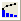

パレート図は、折れ線グラフと縦棒グラフを組み合わせた特別なグラフです。通常、縦棒グラフは、その高さで問題の頻度または重要度を表し、重要性の順番に降順に並べ、折れ線グラフはその累積度数を表し、単調に増加します。
パレート図は、システムに影響を及ぼす要因を認識するのに使われます。よって分析において、重要度の低い要因を除外するのに役立ちます。
既にビン化データがある場合、作図: 2D: パレート図：ビン化データメニューを使って、そのデータからパレート図を作成できます。または、2Dグラフギャラリーツールバーのビン化データのパレート図ボタンをクリックします。これにより、plot_paratobin ダイアログが開きます。
素データの場合、作図: 2D: パレート図：素データメニューを使って、そのデータからパレート図を作成できます。または、2Dグラフギャラリーツールバーの素データのパレート図ボタン をクリックします。これにより、plot_paratorawダイアログが開きます。
をクリックします。これにより、plot_paratorawダイアログが開きます。
次のサンプルでは、ビン化データまたは素データからパレート図をそれぞれどのように作図するかを案内します。
ビン化データからパレート図を作成します。

素データからパレート図を作成します。